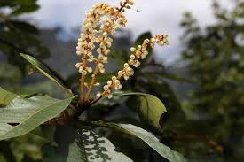

Clethraceae
Summersweet Family
Clethraceae, the Summersweet or White Alder family, is a small family of deciduous or evergreen shrubs and trees belonging to the order Ericales. With a disjunct distribution in the Americas, East Asia, and Madeira, they are typically found in moist, acidic soils. Key features include alternate, simple, serrated leaves often bearing characteristic stellate (star-shaped) hairs, terminal racemes or panicles of usually fragrant white flowers with 5 petals and 10 stamens, a superior ovary, and fruit typically a 3-valved capsule surrounded by the persistent calyx.
Overview
Clethraceae is placed within the large and diverse order Ericales, alongside well-known families like Ericaceae (heaths and blueberries) and Primulaceae (primroses). It is a relatively small family, consisting of only two genera: the widespread Clethra (about 85 species) and the smaller Purdiaea (about 10 species). The family exhibits a markedly disjunct distribution, occurring naturally in eastern North America, Central and South America, East Asia (China, Korea, Japan), and the Atlantic island of Madeira.
Members are typically shrubs or small to medium-sized trees, either deciduous or evergreen, often favoring moist, acidic soils in woodlands, swamps, or mountain forests. They are characterized vegetatively by alternate, simple leaves, usually with serrated margins and often clustered towards the branch tips. A useful diagnostic feature is the frequent presence of distinctive stellate (star-shaped) hairs on leaves, twigs, and inflorescences (best seen with magnification).
Clethraceae are perhaps best known for their attractive, often fragrant flowers, typically borne in terminal racemes or panicles that bloom in summer (hence the common name "Summersweet" for Clethra alnifolia). The flowers are usually white, 5-petaled, and possess 10 stamens surrounding a superior, 3-locular ovary. The fruit is a small, persistent 3-valved capsule. Clethra alnifolia is native to the eastern US, potentially reaching far eastern Oklahoma, and is widely cultivated as an ornamental shrub valued for its fragrant summer flowers that attract pollinators.
Quick Facts
- Scientific Name: Clethraceae Klotzsch
- Common Name: Summersweet family (or White Alder family)
- Number of Genera: 2 (Clethra, Purdiaea)
- Number of Species: Approximately 95
- Distribution: Disjunct: Americas (E North America, C & S America), East Asia, Madeira.
- Evolutionary Group: Eudicots - Asterids - Order Ericales
Key Characteristics
Growth Form and Habit
Deciduous or evergreen shrubs or trees. Twigs, petioles, leaves (especially undersides), and inflorescences are frequently covered with whitish or brownish stellate (star-shaped) hairs, sometimes mixed with simple or glandular hairs.
Leaves
Leaves are arranged alternately and spirally along the stems, often appearing clustered near the branch tips. They are simple, petiolate, typically ovate, obovate, or elliptic in shape. Leaf margins are characteristically serrated or dentate, rarely entire. Venation is pinnate. Stipules are absent (exstipulate).
Inflorescence
Inflorescences are typically terminal (sometimes axillary from upper leaves), consisting of elongated, many-flowered racemes or panicles (branched racemes). The inflorescences are often erect or ascending and quite showy. Small bracts are usually present at the base of the pedicels (flower stalks).
Flowers
Flowers are usually bisexual (perfect), actinomorphic (radially symmetrical), typically 5-merous (rarely 6-merous), and often strongly and sweetly fragrant.
- Calyx: Consists of 5 sepals, fused only at the base, typically ovate or lanceolate, often covered in stellate hairs, and notably persistent, remaining attached around the base of the fruit.
- Corolla: Consists of 5 petals, which are free (distinct) or only slightly fused at the very base. Petals are usually white (sometimes pinkish), often concave or somewhat bell-shaped (campanulate), and sometimes have fringed or notched tips. They are usually deciduous after flowering.
- Androecium: Typically consists of 10 stamens arranged in two whorls of 5 (diplostemonous). Filaments are distinct, often flattened and hairy near the base, inserted at the base of the ovary (hypogynous). Anthers are characteristically arrowhead-shaped (sagittate) at the base, invert during development (resupinate, becoming extrorse?), and dehisce via terminal or subterminal pores or short slits (similar to many Ericaceae). Pollen grains are often shed in tetrads.
- Gynoecium: The ovary is superior, composed of 3 fused carpels forming a 3-locular ovary. Placentation is axile, with numerous small ovules in each locule. There is a single, terminal style, often elongated and persistent in fruit, ending in a typically 3-lobed or capitate stigma. A nectar disk is usually absent or inconspicuous.
Fruits and Seeds
The fruit is a loculicidal capsule, typically globose or subglobose in shape, which splits open into 3 valves along the lines corresponding to the locule midribs. The capsule is dry, often hairy, and characteristically subtended or partially enclosed by the persistent calyx. It contains numerous very small seeds. Seeds are often flattened or winged, facilitating wind dispersal. They possess a fleshy endosperm and a straight embryo.
Chemical Characteristics
Plants in this family are known to be aluminum accumulators. They contain tannins and triterpenes. The presence of distinctive stellate hairs is a key micromorphological feature. Iridoid compounds have also been reported in some species.
Field Identification
Clethraceae members can often be identified by their shrubby/tree habit, alternate serrated leaves with stellate hairs, terminal clusters of white flowers, and persistent capsular fruits.
Primary Identification Features
- Habit: Shrub or small tree.
- Alternate, Simple, Serrated Leaves: Often clustered near branch tips.
- Stellate Hairs: Look for star-shaped hairs on leaves, twigs, buds, or inflorescences (requires hand lens).
- Terminal Racemes/Panicles: Elongated clusters of flowers at branch ends.
- White (Usually) Fragrant Flowers: Typically 5 petals, bell-shaped or open.
- 10 Stamens: Consistently 10 stamens per flower.
- Superior Ovary, 3-Locular: Leading to a 3-parted structure.
- 3-Valved Capsule Fruit: Small, dry capsule surrounded by persistent calyx.
- Habitat: Often found in moist, acidic woods, swamps, or bogs.
Secondary Identification Features
- Anthers opening by pores or short slits.
- Pollen often in tetrads (microscopic).
- Lack of stipules.
- Disjunct distribution pattern (Americas/Asia/Madeira).
Seasonal Identification Tips (relevant to E Oklahoma / E US / cultivation)
- Summer (Mid-Late): Peak flowering time for Clethra alnifolia. Look for the upright, fragrant white racemes attracting numerous pollinators (bees, butterflies).
- Fall: Leaves turn yellow or brownish. Developing or mature brown capsules become evident, persisting through winter.
- Winter: Deciduous species identifiable by alternate leaf scars clustered near tips, persistent 3-valved capsules subtended by calyx, and possibly stellate hairs on buds/twigs.
- Spring: New leaves emerge, often showing stellate hairs.
- Year-Round: Check habitat (moist woods, swamps). Look for stellate hairs on any available plant part using magnification.
Common Confusion Points
- Ericaceae (Heath Family): Closely related. Many Ericaceae are shrubs in similar habitats with alternate leaves and 10 stamens opening by pores. However, Ericaceae often have evergreen, entire leaves (though some are serrated/deciduous), corollas are frequently fused and urn-shaped (urceolate), and fruits are often berries (Vaccinium) or different types of capsules. Stellate hairs are less common.
- Iteaceae (Itea virginica - Virginia Sweetspire): Shrubs in similar habitats with alternate serrated leaves and white racemes. Distinguished by having only 5 stamens, narrow petals, slightly semi-inferior ovary, and a narrow septicidal capsule. Lacks stellate hairs. (Order Saxifragales).
- Hamamelidaceae (Witch Hazel Family): Shrubs/trees with alternate simple leaves, but leaves often asymmetrical, flowers very different (often strap-like petals, 4-5 stamens), fruit a distinctive woody capsule. (Order Saxifragales).
- Styracaceae (Storax Family): Trees/shrubs often with stellate hairs and white flowers in racemes/panicles (Styrax, Halesia). However, leaves are often entire, flowers typically have fused corollas, ovary is often partially or fully inferior, and fruit is usually a drupe or winged nutlet. (Also in Ericales).
Field Guide Quick Reference
Look For:
- Shrub or small tree
- Alternate simple, serrated leaves
- Stellate hairs (use lens)
- Terminal racemes/panicles
- Flowers white (usu.), fragrant, 5 petals
- 10 stamens
- Ovary superior, 3-locular
- Fruit a 3-valved capsule
- Often moist, acidic habitats
Key Variations:
- Deciduous vs. Evergreen
- Leaf shape (ovate, obovate, etc.)
- Density of stellate hairs
- Inflorescence shape (raceme vs. panicle)
- Petal shape (entire vs. fringed/notched)
Notable Examples
The family is dominated by the genus Clethra, which includes popular ornamental shrubs and ecologically interesting species across its disjunct range.

Clethra alnifolia
Summersweet, Sweet Pepperbush
A deciduous shrub native to eastern North America (potentially reaching far eastern OK). Found in swamps, wet woods, and coastal plains. Features alternate, obovate, serrated leaves, often shiny green above and paler with stellate hairs beneath. Produces abundant, fragrant white flowers in upright terminal racemes in mid to late summer. Widely cultivated with many cultivars ('Ruby Spice', 'Hummingbird').

Clethra Flower Detail
Flower Structure
Clethraceae flowers typically have 5 white petals, a persistent 5-lobed calyx, and characteristically 10 stamens with anthers that often open by pores. The superior ovary sits centrally, developing into a 3-valved capsule. The flowers are often very fragrant.

Stellate Hairs
Star-shaped Hairs
A common feature in Clethraceae is the presence of stellate (star-shaped) hairs, especially on the undersides of leaves, young twigs, and parts of the inflorescence. Observing these hairs with a hand lens can be a helpful identification clue.

Clethra arborea
Lily-of-the-Valley Tree
An evergreen tree native only to the island of Madeira. It has larger, glossier leaves than C. alnifolia and produces attractive, drooping panicles of fragrant white, bell-shaped flowers resembling lily-of-the-valley. Cultivated in mild climates (e.g., California, UK).

Purdiaea species
Purdiaea
The second, smaller genus (~10 species) in the family, comprising evergreen shrubs or small trees found mainly in Cuba, northern South America, and Central America. They differ from Clethra in certain floral details, such as sometimes having petals fused into a longer tube or potentially differences in ovary structure or capsule dehiscence.
Phylogeny and Classification
Clethraceae is placed within the large and diverse order Ericales, which belongs to the Asterid clade of eudicots. Ericales contains numerous economically and ecologically important families, including heaths, teas, primroses, persimmons, and pitcher plants.
Molecular phylogenetic studies consistently show that Clethraceae is closely related to the families Cyrillaceae (Titi family, another small family of shrubs/trees from the Americas) and the massive family Ericaceae (Heath family, including blueberries, rhododendrons, azaleas, etc.). These three families (Clethraceae, Cyrillaceae, Ericaceae) form a well-supported clade within the Ericales, representing one of the major lineages within the non-sympetalous ("basal") part of the order.
Position in Plant Phylogeny
- Kingdom: Plantae
- Clade: Angiosperms (Flowering plants)
- Clade: Eudicots
- Clade: Asterids
- Order: Ericales
- Family: Clethraceae
- (Phylogenetic Position: Close to Ericaceae and Cyrillaceae within Ericales)
Evolutionary Significance
Clethraceae offers insights into the evolution within the Ericales order:
- Link between Ericaceae/Cyrillaceae: Helps understand the relationships and trait evolution within this core clade of Ericales.
- Habit Evolution: Represents the shrub/tree habit within this alliance, contrasting with predominantly herbaceous groups elsewhere in Ericales (like Primulaceae).
- Biogeography: The disjunct distribution pattern across the Americas, East Asia, and Madeira points to ancient origins and subsequent dispersal or vicariance events shaping the distribution of Ericales lineages.
- Pollination Biology: Fragrant flowers attracting diverse pollinators contribute to understanding pollination syndromes within the order.
- Morphological Features: Traits like stellate hairs and poricidal/slit anther dehiscence provide characters for comparison across Ericales families.